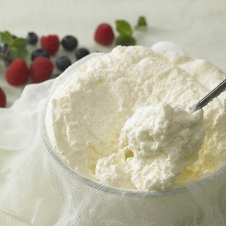

クリームチーズとは？
クリームチーズとは？

クリームチーズは非熟成タイプの白くて、柔らかくきめ細かいチーズです。チーズの中ではタンパク質が少なく、乳酸菌由来の酸味と乳脂肪の豊かな味わいで、なめらかな舌ざわりが特徴です。
原産地は不明です。 カッテージチーズと同様、世界で最古のチーズの一つといわれています。 今では国内はもちろん、世界各国で作られています。
クリームチーズは非熟成タイプなので、食べきることを前提に購入することをおすすめします。パンやベーグル、クラッカーなどにフルーツやジャムと一緒に食べるのがおすすめ。明太子などと混ぜたディップソースはオードブルに。ドライフルーツやナッツ、スパイスなどと混ぜたものは手軽なデザートになります。 チーズケーキの材料として使用するチーズとして有名ですね。 10℃以下の低温状態ではやや固いのですが、食べる直前に常温に戻せば、その名の通りクリームのように柔らかくなめらかな舌触りになり、扱いやすくなります。 保存する場合は１週間を目安にすると良いでしょう。